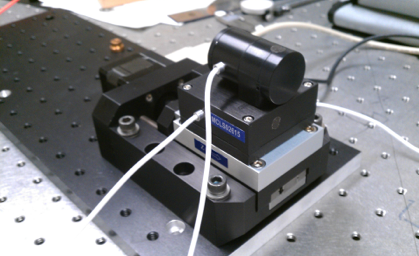
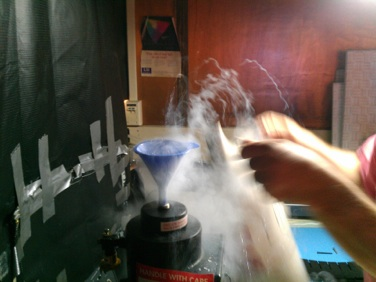

Projects

Externally Dispersed Interferometer
June 9, 2012

Telescopes in observatories like the Lick Observatory are used to gaze deep into the night sky for new planets near stars. However, limitations such as Earth’s atmosphere makes it difficult to procure data with high resolution. Traditionally, a larger observatory with a bigger telescope would be built to address this issue but due to existing constraints, this is impossible for the Lick Observatory. To combat this problem from another angle, the Externally Dispersed Interferometer (EDI) was developed as an add-on to Lick Observatory’s spectrograph to improve its spectral resolution by up to ten times.
Over the summer of 2012, I had the opportunity to work as an engineering assistant at Space Science Labs to design and build a new EDI for the Lick Observatory. First, I constructed the optical layout in Solidworks, which provided constraints on where all the EDI’s constituent pieces can go. Because the optics used in the EDI are incompatible with most off the shelf hardware, I also had to design novel holders for etalons as long as 3” as well as mirrors with no mounting features.
Fun with liquid nitrogen. Here, we are pouring liquid nitrogen into the dewar of the CCD camera before we use the spectrometer.
Isometric view of the interferometer that I worked on this summer. The gray lines converge into the beam splitter (green) in the center and reemerges on the other side to the rotary stage and linear stage (pictured top) where a combination of mirrors and lens create different optical distances for light to travel through. This “delayed” light combines with the original light to create DeMoire patterns that can be deciphered to glean additional information about the star.
Left: Piezolinear stage to actuate the mirror element
